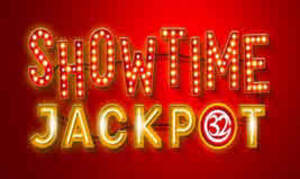

Trade Mark Journal No.2025/033 15 August 2025
UK00004223912 24 June 2025 (9,28,38,41)

- Class 9
- Pre-recorded magnetic data carriers, recording discs, compact discs, DVDs and other digital recording media, namely, CD-roms relating to the fields of racing, wagers and betting, games of chance, poker and other card games and bingo; mechanisms for coin-operated apparatus; downloadable computer software for the purpose of providing products and services in the fields of racing, wagers and betting, games of chance, poker and other card games; cash registers, calculating machines, data processing equipment and computers; computers and computer hardware; recorded and downloadable computer software for betting, gaming and gambling services; recorded and downloadable computer game software.
- Class 28
- Casino card games, bingo card games; playing cards; poker playing game, namely, playing cards for poker; poker playing sets comprised of poker chips; playing card shuffling device; playing card game accessories, namely, playing card holders; gaming equipment, namely, playing card cloths; gaming equipment, namely, games tables; gaming equipment, namely, playing card gaming bags in the form of holders; slot machines; coin-operated amusement machines; counter-freed amusement apparatus, namely, pinball games, amusement game machines and hand-held units for playing electronic games in the nature of downloadable games; structural parts and fittings for all the aforesaid goods.
- Class 38
- Providing multiple-user access to a global computer information network system allowing access to gaming and betting information and services via television, the internet, other networks and other media or communication channels; telecommunications services, namely, transmission of data, graphics, images, audio and video by means of telecommunications networks, wireless communication networks, and the Internet; broadcasting services, i.e. Broadcasting of video, wireless broadcasting and audio programming over the Internet, broadcasting via television, radio in the field of entertainment, gaming, and sports services; computer communication and Internet access; provision of access to content, websites and portals; broadcasting, telecommunication and data-casting services concerning betting, gaming, gambling and entertainment; providing access to multiple-user network systems allowing access to gaming and betting information and services via television, the internet, other networks and other media or communication channels; electronic and computer aided transmission and broadcast of information, data, messages, and images; electronic communications services between players and an operator of betting, gaming and gambling services and competitions; providing access to databases; providing access to a website featuring betting, gaming and gambling information; providing access to betting, gaming and gambling websites on the internet; advice, consultancy and information for the aforesaid.
- Class 41
- Entertainment and sports services provided online, namely, conducting online entertainment in the nature of games featuring card and board games available from a computer database or from the internet; entertainment and sports services, namely organizing entertainment events; entertainment and sports services, namely, providing digital online card and board games from a computer database or from the internet; entertainment services, namely, gambling services in the form of a sports bookmaker; gambling services in the nature of organization and operation of football pools, lotteries and betting; gambling services in the nature of arranging and conducting of contests and sports competitions, offline and online by way of a computer database or the internet; entertainment services in the form of gambling services in the field of racing, wagers and betting, games of chance, online bingo services, bingo halls, online casino, casinos, games of chance, electronic games, media games, tournaments for poker and other card games, action skill games and lotteries, provided online via a computer database, telecommunications networks and the internet; advisory, consultancy and information services relating to all the aforesaid services; Entertainment in the nature of competition events, namely, e-sport events, gambling events, poker competitions; Arranging and conducting competition events, namely e-sport events, gambling events, poker competitions; Organization of competition events namely e-sport events, gambling events, poker competitions; Entertainment services, namely, providing online non downloadable interactive games.
Kindred IP Limited
Representative: Albright IP Limited